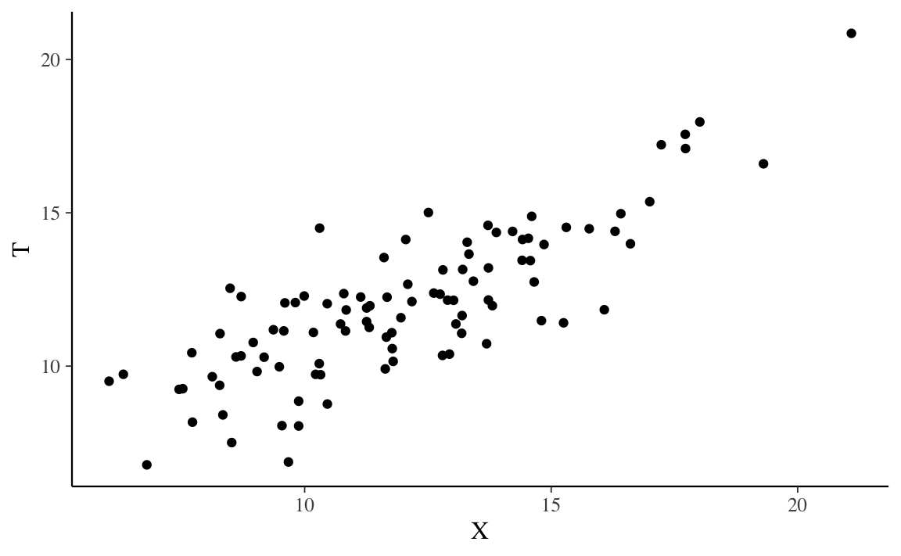
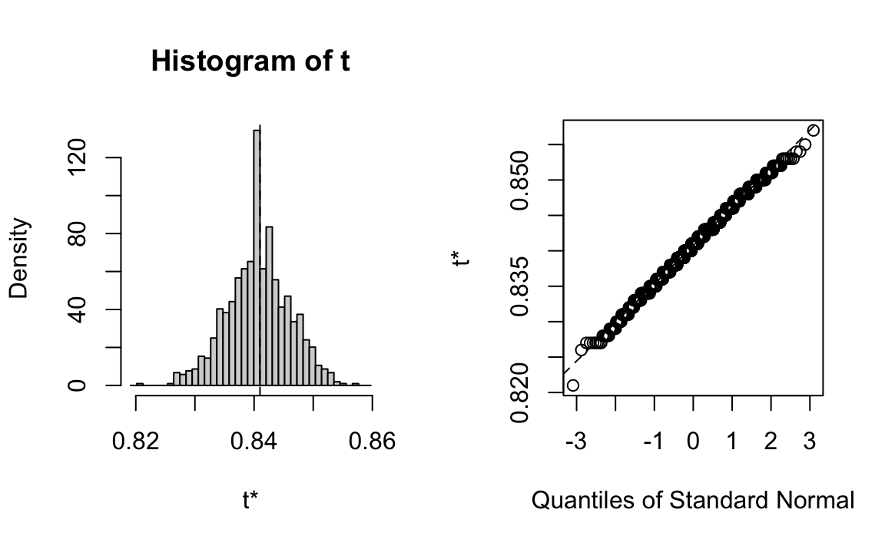
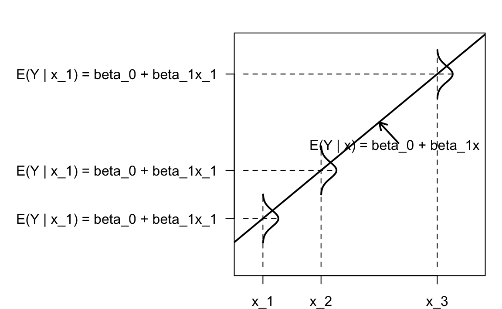

6.3 Principio base dell’analisi fattoriale
Attualmente, l’inferenza statistica nell’analisi fattoriale spesso si svolge mediante il calcolo di stime della massima verosimiglianza ottenute mediante procedure iterative come l’algoritmo EM (Rubin & Thayer, 1982). All’inizio dell’analisi fattoriale, tuttavia, la procedura di estrazione dei fattori faceva leva sulle relazioni invarianti che il modello fattoriale impone agli elementi della matrice di covarianza delle variabili osservate. Il più conosciuto tra tali invarianti è la tetrade che si presenta nei modelli ad un fattore.
La tetrade è una combinazione di quattro correlazioni. Se l’associazione osservata tra le variabili dipende effettivamente dal fatto che le variabili in questione sono state causalmente generate da un fattore comune inosservabile, allora è possibile generare una combinazione delle correlazioni tra le variabili che porta all’annullamento della tetrade. In altre parole, l’analisi fattoriale si chiede se esiste un insieme esiguo di \(m<p\) variabili inosservabili che rendono significativamente nulle tutte le correlazioni parziali tra le \(p\) variabili osservate al netto dei fattori comuni. Se il metodo della correlazione parziale consente di identificare \(m\) variabili latenti, allora lo psicologo conclude che tali fattori corrispondono agli \(m\) costrutti che intende misurare.
Per chiarire il metodo dell’annullamento della tetrade consideriamo la matrice di correlazioni riportata nella Tabella @ref(tab:corr_parziale). Nella tabella, la correlazione parziale tra ciascuna coppia di variabili \(y_i\), \(y_j\) (con \(i \neq j\)) dato \(\xi\) è sempre uguale a zero. Ad esempio, la correlazione parziale tra \(y_3\) e \(y_5\) dato \(\xi\) è:
\[\begin{equation} \begin{aligned} r_{35 \mid \xi} &= \frac{r_{35} - r_{3\xi}r_{5\xi}} {\sqrt{(1-r_{3\xi}^2)(1-r_{5\xi}^2)}} \notag \\[12pt] &= \frac{0.35 - 0.7 \times 0.5} {\sqrt{(1-0.7^2)(1-0.5^2)}} = 0. \notag \end{aligned} \end{equation}\]
Lo stesso risultato si trova per qualunque altra coppia di variabili \(y_i\) e \(y_j\), ovvero \(r_{ij \mid \xi} = 0\).
| \(\xi\) | \(y_1\) | \(y_2\) | \(y_3\) | \(y_4\) | \(y_5\) | |
|---|---|---|---|---|---|---|
| \(\xi\) | 1.00 | |||||
| \(y_1\) | 0.90 | 1.00 | ||||
| \(y_2\) | 0.80 | 0.72 | 1.00 | |||
| \(y_3\) | 0.70 | 0.63 | 0.56 | 1.00 | ||
| \(y_4\) | 0.60 | 0.54 | 0.48 | 0.42 | 1.00 | |
| \(y_5\) | 0.50 | 0.45 | 0.40 | 0.35 | 0.30 | 1.00 |
Possiamo dunque dire che, per la matrice di correlazioni della Tabella precedente, esiste un’unica variabile \(\xi\) la quale, quando viene controllata, spiega tutte le
\[ p(p-1)/2 = 5(5-1)/2=10 \]
correlazioni tra le variabili \(y\). Questo risultato non è sorprendente, in quanto la matrice di correlazioni della Tabella esaminata è stata costruita in modo tale da possedere tale proprietà.
Ma supponiamo di essere in una situazione diversa, ovvero di avere osservato soltanto le variabili \(y_i\) e di non conoscere \(\xi\). In tali circostanze ci possiamo porre la seguente domanda: “esiste una variabile inosservabile \(\xi\) la quale, se venisse controllata, renderebbe uguali a zero tutte le correlazioni parziali tra le variabili \(y\)?” Se una tale variabile inosservabile esiste, ed è in grado di spiegare tutte le correlazioni tra le variabili osservate \(y\), allora essa viene chiamata fattore.
Definizione 6.1 Un fattore è una variabile inosservabile in grado di rendere significativamente nulle tutte le correlazioni parziali tra le variabili manifeste.
6.3.1 Vincoli sulle correlazioni
Come si può stabilire se esiste una variabile inosservabile in grado di rendere nulle tutte le correlazioni parziali tra le variabili osservate? Riscriviamo la (6.3) per specificare la correlazione parziale tra le variabili \(y_i\) e \(y_j\) dato \(\xi\):
\[ r_{ij \mid \xi} = \frac{r_{ij} - r_{i\xi}r_{j\xi}} {\sqrt{(1-r_{i\xi}^2)(1-r_{j\xi}^2)}} \]
Affinché \(r_{ij \mid \xi}\) sia uguale a zero è necessario che
\[ r_{ij} - r_{i\xi}r_{j\xi}=0 \]
ovvero
\[ r_{ij} = r_{i\xi}r_{j\xi}. \]
In altri termini, se esiste un fattore non osservato \(\xi\) in grado di rendere uguali a zero tutte le correlazioni parziali \(r_{ih \mid \xi}\), allora la correlazione tra ciascuna coppia di variabili \(y\) deve essere uguale al prodotto delle correlazioni tra ciascuna \(y\) e il fattore latente \(\xi\). Questo è il principio base dell’analisi fattoriale.
6.3.2 Teoria dei Due Fattori
Per fare un esempio concreto relativo al metodo dell’annullamento della tetrade, esaminiamo la matrice di correlazioni originariamente analizzata da Spearman. Spearman (1904) raccolse alcune misure di capacità intellettuale su un piccolo numero di studenti di una scuola superiore. Nello specifico, esaminò i voti di tali studenti nelle seguenti materie: studio dei classici (\(c\)), letteratura inglese (\(e\)) e abilità matematiche (\(m\)). Considerò anche la prestazione in un compito di discriminazione dell’altezza di suoni (pitch discrimination) (\(p\)), ovvero un’abilità diversa da quelle richieste nei test scolastici.
Secondo la Teoria dei Due Fattori, le prestazioni relative ad un determinato compito intellettuale possiedono una componente comune (detta fattore “g”) con le prestazioni in un qualunque altro compito intellettuale e una componente specifica a quel determinato compito. Il modello dell’intelligenza di Spearman prevede dunque due fattori, uno generale e uno specifico (detto fattore “s”). Il fattore “g” costituisce la componente invariante dell’abilità intellettiva, mente il fattore “s” è una componente che varia da condizione a condizione.
Come è possibile stabilire se esiste una variabile latente in grado di spiegare le correlazioni tra le variabili osservate da Spearman? Lo strumento proposto da Spearman per rispondere a questa domanda è l’annullamento della tetrade. L’annullamento della tetrade utilizza i vincoli sulle correlazioni che derivano dalla definizione di correlazione parziale. In precedenza abbiamo visto che la correlazione parziale tra le variabili \(y\) indicizzate da \(i\) e \(j\), al netto dell’effetto di \(\xi\), è nulla se
\[ r_{ij} = r_{i\xi}r_{j\xi}. \]
Nel caso dei dati di Spearman, dunque, le correlazioni parziali sono nulle se la correlazione tra “studi classici” e “letteratura inglese” è uguale al prodotto della correlazione tra “studi classici” e il fattore \(\xi\) e della correlazione tra “letteratura inglese” e il fattore \(\xi\). Inoltre, la correlazione tra “studi classici” e “abilità matematica” deve essere uguale al prodotto della correlazione tra “studi classici” e il fattore \(\xi\) e della correlazione tra “abilità matematica” e il fattore \(\xi\); e così via.
Le correlazioni tra le variabili manifeste e il fattore latente sono dette saturazioni fattoriali e vengono denotate con la lettera \(\lambda\). Se il modello di Spearman è corretto, avremo che
\[ r_{ec}=\lambda_e \times \lambda_{c}, \]
dove \(r_{ec}\) è la correlazione tra “letteratura inglese” (e) e “studi classici” (c), \(\lambda_e\) è la correlazione tra “letteratura inglese” e \(\xi\), e \(\lambda_{c}\) è la correlazione tra “studi classici” e \(\xi\).
Allo stesso modo, la correlazione tra “studi classici” e “matematica” (m) dovrà essere uguale a
\[ \lambda_c \times \lambda_m, \]
eccetera.
6.3.3 Annullamento della tetrade
Date le correlazioni tra tre coppie di variabili manifeste, il metodo dell’annullamento della tetrade rende possibile stimare i valori delle saturazioni fattoriali \(\lambda\). Ad esempio, per le variabili \(c\), \(m\) ed \(e\), possiamo scrivere le seguenti tre equazioni in tre incognite:
\[\begin{equation} \begin{aligned} r_{cm} &= \lambda_c \times \lambda_m, \notag \\ r_{em} &= \lambda_e \times \lambda_m, \\ r_{ce} &= \lambda_c \times \lambda_e. \notag \end{aligned} \end{equation}\]
Risolvendo il precedente sistema di equazioni lineari, il coefficiente di saturazione \(\lambda_m\) della variabile \(y_m\) nel fattore comune \(\xi\), ad esempio, può essere calcolato a partire dalle correlazioni tra le variabili manifeste \(c\), \(m\), ed \(e\) nel modo seguente:
\[\begin{equation} \lambda_m = \sqrt{ \frac{r_{cm} r_{em}}{r_{ce}}}. \tag{6.4} \end{equation}\]
Lo stesso vale per le altre due saturazioni \(\lambda_c\) e \(\lambda_e\).
Nel suo articolo del 1904, Spearman osservò le seguenti correlazioni tra le variabili \(Y_c\), \(Y_e\), \(Y_m\) e \(Y_p\):
\[ \begin{array}{ccccc} \hline & Y_C & Y_E & Y_M & Y_P \\ \hline Y_C & 1.00 & 0.78 & 0.70 & 0.66 \\ Y_E & & 1.00 & 0.64 & 0.54 \\ Y_M & & & 1.00 & 0.45 \\ Y_P & & & & 1.00 \\ \hline \end{array} \]
Utilizzando la (6.4), mediante le correlazioni \(r_{cm}\), \(r_{em}\), e \(r_{ce}\) fornite dalla tabella precedente, la saturazione \(\lambda_m\) diventa uguale a:
\[ \hat{\lambda}_m = \sqrt{ \frac{r_{cm} r_{em}}{r_{ce}} } = \sqrt{ \frac{0.70 \times 0.64}{0.78} } = 0.76. \]
È importante notare che il metodo dell’annullamento della tetrade produce risultati falsificabili. Infatti, ci sono modi diversi per calcolare la stessa saturazione fattoriale. Se il modello fattoriale è corretto si deve ottenere lo stesso risultato in tutti i casi. Nel caso presente, la saturazione fattoriale \(\lambda_m\) può essere calcolata in altri due modi:
\[\begin{equation} \begin{aligned} \hat{\lambda}_m &= \sqrt{ \frac{r_{cm} r_{mp}}{r_{cp}} } = \sqrt{ \frac{0.78 \times 0.45}{0.66} } = 0.69, \notag \\ \hat{\lambda}_m &= \sqrt{ \frac{r_{em} r_{mp}}{r_{ep}} } = \sqrt{ \frac{0.64 \times 0.45}{0.54} } = 0.73. \notag\end{aligned} \end{equation}\]
I tre valori che sono stati ottenuti sono molto simili. Qual è allora la stima migliore di \(\lambda_m\)?
6.3.4 Metodo del centroide
La soluzione più semplice è quella di fare la media di questi tre valori (\(\bar{\lambda}_m = 0.73\)). Un metodo migliore (meno vulnerabile ai valori anomali) è dato dal rapporto tra la somma dei numeratori e dei denominatori:
\[ \hat{\lambda}_m = \sqrt{ \frac{0.70 \times 0.64 + 0.78 \times 0.45 + 0.64 \times 0.45}{0.78+0.66+0.54} } = 0.73 \]
In questo caso, i due metodi danno lo stesso risultato. Le altre tre saturazioni fattoriali trovate mediante il metodo del centroide sono:
\[ \hat{\lambda}_c = 0.97, \quad \hat{\lambda}_e = 0.84, \quad \hat{\lambda}_p = 0.65. \]
In conclusione,
\[ \boldsymbol{\hat{\Lambda}}^\prime= (\hat{\lambda}_c, \hat{\lambda}_e, \hat{\lambda}_m, \hat{\lambda}_p) = (0.97, 0.84, 0.73, 0.65). \]
6.3.5 Introduzione a lavaan
Analizziamo ora nuovamente gli stessi dati usando un metodo di stima moderno (massima verosimiglianza), mediante le funzioni del pacchetto lavaan. La matrice completa dei dati di Spearman è messa a disposizione da Kan, Maas, and Levine (2019). Iniziamo a caricare i pacchetti necessari:
library("lavaan")
library("semPlot")
library("knitr")
library("kableExtra")
library("tidyr")
library("corrplot")Specifichiamo il nome delle variabili manifeste
varnames <- c(
"Classics", "French", "English", "Math", "Pitch", "Music"
)e il loro numero
ny <- length(varnames)Leggiamo la matrice di correlazione:
spearman_cor_mat <- matrix(
c(
1.00, .83, .78, .70, .66, .63,
.83, 1.00, .67, .67, .65, .57,
.78, .67, 1.00, .64, .54, .51,
.70, .67, .64, 1.00, .45, .51,
.66, .65, .54, .45, 1.00, .40,
.63, .57, .51, .51, .40, 1.00
),
ny, ny,
byrow = TRUE,
dimnames = list(varnames, varnames)
)Specifichiamo l’ampiezza campionaria:
n <- 33Esaminiamo la sintassi usata da lavaan a livello degli item:
# Regression
y ~ f1 + f2 + x1 + x2
f1 ~ f2 + f3
f2 ~ f3 + x1 + x2
# Latent variables
f1 <- ~ y1 + y2 + y3
f2 <- ~ y4 + y5 + y6
f3 <- ~ y7 + y8 + y9 + y10
# Variances and covariances
y1 ~ ~y1
y1 ~ ~y2
f1 ~ ~f2
# Intercepts
y1 ~ 1
f1 ~ 1Definiamo il modello unifattoriale in lavaan. L’operatore =~ si può leggere dicendo che la variabile latente a sinistra dell’operatore viene identificata dalle variabili manifeste elencate a destra dell’operatore e separate dal segno +:
spearman_mod <- "
g =~ Classics + French + English + Math + Pitch + Music
"Adattiamo il modello ai dati con la funzione cfa():
fit1 <- lavaan::cfa(
spearman_mod,
sample.cov = spearman_cor_mat,
sample.nobs = n,
std.lv = TRUE
)L’argomento std.lv = TRUE specifica che imponiamo una varianza pari a 1 a tutte le variabili latenti comuni (nel caso presente, solo una). Ciò consente di stimare le saturazioni fattoriali. Possiamo esaminare la soluzione ottenuta con la seguente istruzione:
summary(
fit1,
fit.measures = TRUE,
standardized = TRUE
)
#> lavaan 0.6-11 ended normally after 23 iterations
#>
#> Estimator ML
#> Optimization method NLMINB
#> Number of model parameters 12
#>
#> Number of observations 33
#>
#> Model Test User Model:
#>
#> Test statistic 2.913
#> Degrees of freedom 9
#> P-value (Chi-square) 0.968
#>
#> Model Test Baseline Model:
#>
#> Test statistic 133.625
#> Degrees of freedom 15
#> P-value 0.000
#>
#> User Model versus Baseline Model:
#>
#> Comparative Fit Index (CFI) 1.000
#> Tucker-Lewis Index (TLI) 1.086
#>
#> Loglikelihood and Information Criteria:
#>
#> Loglikelihood user model (H0) -212.547
#> Loglikelihood unrestricted model (H1) -211.091
#>
#> Akaike (AIC) 449.094
#> Bayesian (BIC) 467.052
#> Sample-size adjusted Bayesian (BIC) 429.622
#>
#> Root Mean Square Error of Approximation:
#>
#> RMSEA 0.000
#> 90 Percent confidence interval - lower 0.000
#> 90 Percent confidence interval - upper 0.000
#> P-value RMSEA <= 0.05 0.976
#>
#> Standardized Root Mean Square Residual:
#>
#> SRMR 0.025
#>
#> Parameter Estimates:
#>
#> Standard errors Standard
#> Information Expected
#> Information saturated (h1) model Structured
#>
#> Latent Variables:
#> Estimate Std.Err z-value P(>|z|) Std.lv Std.all
#> g =~
#> Classics 0.942 0.129 7.314 0.000 0.942 0.956
#> French 0.857 0.137 6.239 0.000 0.857 0.871
#> English 0.795 0.143 5.545 0.000 0.795 0.807
#> Math 0.732 0.149 4.923 0.000 0.732 0.743
#> Pitch 0.678 0.153 4.438 0.000 0.678 0.689
#> Music 0.643 0.155 4.142 0.000 0.643 0.653
#>
#> Variances:
#> Estimate Std.Err z-value P(>|z|) Std.lv Std.all
#> .Classics 0.083 0.051 1.629 0.103 0.083 0.086
#> .French 0.234 0.072 3.244 0.001 0.234 0.242
#> .English 0.338 0.094 3.610 0.000 0.338 0.349
#> .Math 0.434 0.115 3.773 0.000 0.434 0.447
#> .Pitch 0.510 0.132 3.855 0.000 0.510 0.526
#> .Music 0.556 0.143 3.893 0.000 0.556 0.573
#> g 1.000 1.000 1.000È possibile semplificare l’output dalla funzione summary() in maniera tale da stampare solo la tabella completa delle stime dei parametri e degli errori standard, ecc.
kable(coef(fit1), booktabs = TRUE, format = "markdown")| x | |
|---|---|
| g=~Classics | 0.94152885 |
| g=~French | 0.85748943 |
| g=~English | 0.79479800 |
| g=~Math | 0.73208069 |
| g=~Pitch | 0.67826478 |
| g=~Music | 0.64324900 |
| Classics~~Classics | 0.08322018 |
| French~~French | 0.23440834 |
| English~~English | 0.33799292 |
| Math~~Math | 0.43375436 |
| Pitch~~Pitch | 0.50965401 |
| Music~~Music | 0.55592713 |
Anziché stampare direttamente la tabella dei parametri, è meglio riformattarla con kable quando utilizziamo RMarkdown. Senza usare kable, l’output diventa:
parameterEstimates(fit1, standardized = TRUE)
#> lhs op rhs est se z pvalue ci.lower ci.upper std.lv
#> 1 g =~ Classics 0.942 0.129 7.314 0.000 0.689 1.194 0.942
#> 2 g =~ French 0.857 0.137 6.239 0.000 0.588 1.127 0.857
#> 3 g =~ English 0.795 0.143 5.545 0.000 0.514 1.076 0.795
#> 4 g =~ Math 0.732 0.149 4.923 0.000 0.441 1.024 0.732
#> 5 g =~ Pitch 0.678 0.153 4.438 0.000 0.379 0.978 0.678
#> 6 g =~ Music 0.643 0.155 4.142 0.000 0.339 0.948 0.643
#> 7 Classics ~~ Classics 0.083 0.051 1.629 0.103 -0.017 0.183 0.083
#> 8 French ~~ French 0.234 0.072 3.244 0.001 0.093 0.376 0.234
#> 9 English ~~ English 0.338 0.094 3.610 0.000 0.154 0.522 0.338
#> 10 Math ~~ Math 0.434 0.115 3.773 0.000 0.208 0.659 0.434
#> 11 Pitch ~~ Pitch 0.510 0.132 3.855 0.000 0.251 0.769 0.510
#> 12 Music ~~ Music 0.556 0.143 3.893 0.000 0.276 0.836 0.556
#> 13 g ~~ g 1.000 0.000 NA NA 1.000 1.000 1.000
#> std.all std.nox
#> 1 0.956 0.956
#> 2 0.871 0.871
#> 3 0.807 0.807
#> 4 0.743 0.743
#> 5 0.689 0.689
#> 6 0.653 0.653
#> 7 0.086 0.086
#> 8 0.242 0.242
#> 9 0.349 0.349
#> 10 0.447 0.447
#> 11 0.526 0.526
#> 12 0.573 0.573
#> 13 1.000 1.000Se invece usiamo kable, con gli opportuni parametri, otteniamo:
parameterEstimates(fit1, standardized = TRUE) %>%
dplyr::filter(op == "=~") %>%
dplyr::select(
"Latent Factor" = lhs,
Indicator = rhs,
B = est,
SE = se,
Z = z,
"p-value" = pvalue,
Beta = std.all
) %>%
knitr::kable(
digits = 3, booktabs = TRUE, format = "markdown",
caption = "Factor Loadings"
)| Latent Factor | Indicator | B | SE | Z | p-value | Beta |
|---|---|---|---|---|---|---|
| g | Classics | 0.942 | 0.129 | 7.314 | 0 | 0.956 |
| g | French | 0.857 | 0.137 | 6.239 | 0 | 0.871 |
| g | English | 0.795 | 0.143 | 5.545 | 0 | 0.807 |
| g | Math | 0.732 | 0.149 | 4.923 | 0 | 0.743 |
| g | Pitch | 0.678 | 0.153 | 4.438 | 0 | 0.689 |
| g | Music | 0.643 | 0.155 | 4.142 | 0 | 0.653 |
Esaminiamo la matrice delle correlazioni residue:
cor_table <- residuals(fit1, type = "cor")$cov
knitr::kable(
cor_table,
digits = 3,
format = "markdown",
booktabs = TRUE
)| Classics | French | English | Math | Pitch | Music | |
|---|---|---|---|---|---|---|
| Classics | 0.000 | -0.003 | 0.008 | -0.011 | 0.001 | 0.005 |
| French | -0.003 | 0.000 | -0.033 | 0.023 | 0.050 | 0.001 |
| English | 0.008 | -0.033 | 0.000 | 0.040 | -0.016 | -0.017 |
| Math | -0.011 | 0.023 | 0.040 | 0.000 | -0.062 | 0.024 |
| Pitch | 0.001 | 0.050 | -0.016 | -0.062 | 0.000 | -0.050 |
| Music | 0.005 | 0.001 | -0.017 | 0.024 | -0.050 | 0.000 |
Creiamo un qq-plot dei residui:
res1 <- residuals(fit1, type = "cor")$cov
res1[upper.tri(res1, diag = TRUE)] <- NA
v1 <- as.vector(res1)
v2 <- v1[!is.na(v1)]
tibble(v2) %>%
ggplot(aes(sample = v2)) +
stat_qq() +
stat_qq_line()
Il pacchetto semPlot consente di disegnare diagrammi di percorso per vari modelli SEM. La funzione semPaths prende in input un oggetto creato da lavaan e disegna il diagramma, con diverse opzioni disponibili. Il diagramma qui prodotto controlla le dimensioni dei caratteri/etichette, la visualizzazione dei residui e il colore dei percorsi/coefficienti. Sono disponibili queste e molte altre opzioni di controllo.
semPaths(
fit1,
residuals = FALSE,
sizeMan = 7,
"std",
posCol = c("black"),
edge.label.cex = 1.2,
layout = "circle2"
)
In una versione alternativa del diagramma di percorso aggiungiamo anche le specificità:
semPaths(
fit1,
"std",
posCol = c("black"),
edge.label.cex = 1.2,
sizeMan = 7
)
Il calcolo delle saturazioni fattoriali con il metodo del centroide aveva prodotto il risultato: \(\boldsymbol{\hat{\Lambda}}'= (0.97, 0.84, 0.73, 0.65)\). Si noti la somiglianza con i valori ottenuti mediante il metodo di massima verosimiglianza.